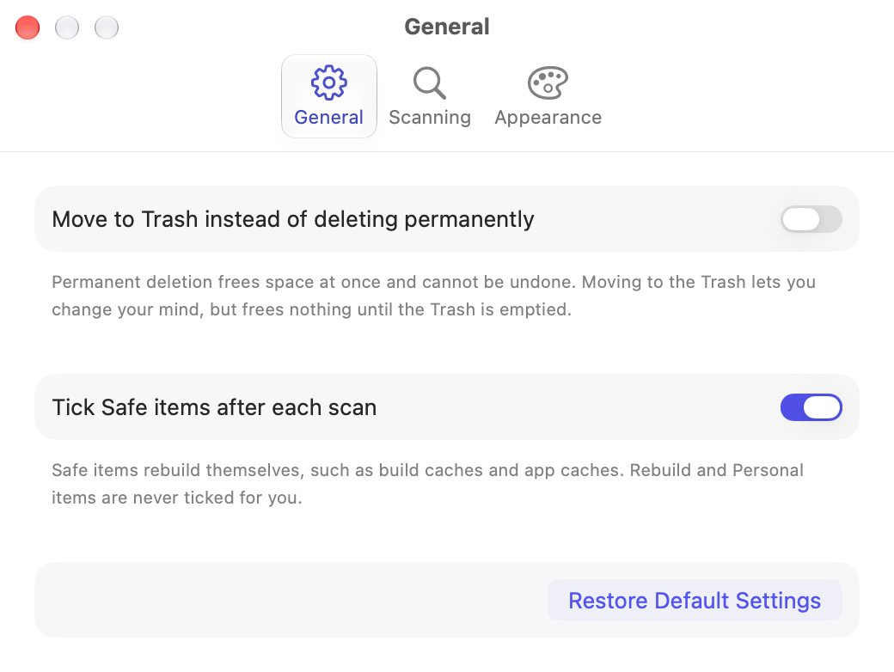
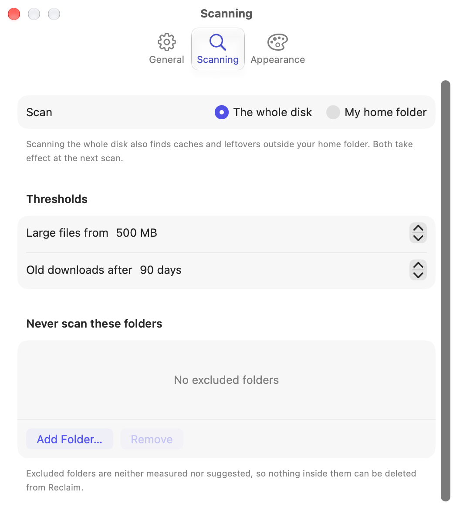
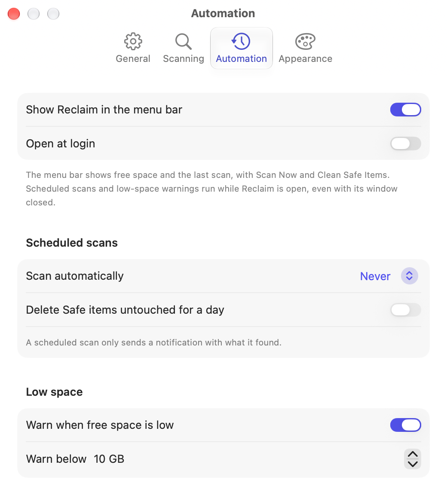

General

| Setting | What it does | Default |
|---|---|---|
| Move to Trash instead of deleting permanently | Ticked items go to the Trash, so you can put them back. Space is freed only when you empty it. Items that need the helper are left alone in this mode. | Off |
| Tick Safe items after each scan | Safe items are ticked as soon as a scan finishes. Rebuild and Personal items never are. | On |
| Restore Default Settings | Resets every setting on every tab. | — |
Scanning

| Setting | What it does | Default |
|---|---|---|
| Scan | The whole disk, or only your home folder. The whole disk also finds system caches and leftovers outside your home. | Whole disk |
| Large files from | The size from which a file appears in Large Files. The list updates as you change it. | 500 MB |
| Old downloads after | How long a file in Downloads must be unchanged before it is suggested. | 90 days |
| Compare duplicates from | The smallest file Duplicates compares. | 1 MB |
| Never scan these folders | Folders skipped completely: nothing in them is measured, suggested or deletable. | None |
Scope, the downloads age and excluded folders take effect at the next scan.
Automation

| Setting | What it does | Default |
|---|---|---|
| Show Reclaim in the menu bar | Free space, the last scan, Scan Now and Clean Safe Items in the menu bar. | On |
| Open at login | Starts Reclaim when you log in, so the menu bar and schedules are always on. | Off |
| Scan automatically | Never, every day or every week, while Reclaim is open. | Never |
| Delete Safe items untouched for a day | After each scheduled scan, deletes Safe items that nothing changed for 24 hours. Details. | Off |
| Warn when free space is low | A notification once each time free space drops below the threshold. | On |
| Warn below | The free-space threshold for that warning. | 10 GB |
Appearance

| Setting | What it does | Default |
|---|---|---|
| Appearance | Follow the system, or always light or dark. | System |
| Accent color | The colour of buttons, selections and the reclaimable part of the storage bar. Twelve presets. | Indigo |
| Custom color | Pick any colour; Reclaim switches to it. | — |